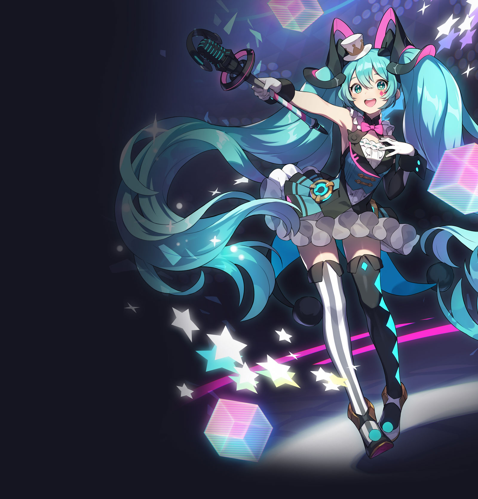

初音ミクとは？
クリプトン・フューチャー・メディア株式会社が開発した、歌詞とメロディーを入力して誰でも歌を歌わせることができる「ソフトウェア」です。
大勢のクリエイターが「初音ミク」で音楽を作り、インターネット上に投稿したことで一躍ムーブメントとなりました。
キャラクター」としても注目を集め、今ではバーチャル・シンガーとしてグッズ展開やライブを行うなど多方面で活躍するようになり、人気は世界に拡がっています。
※ 「鏡音リン」「鏡音レン」「巡音ルカ」「MEIKO」「KAITO」もクリプトン・フューチャー・メディア株式会社が展開するバーチャル・シンガーです
illustration by KEI